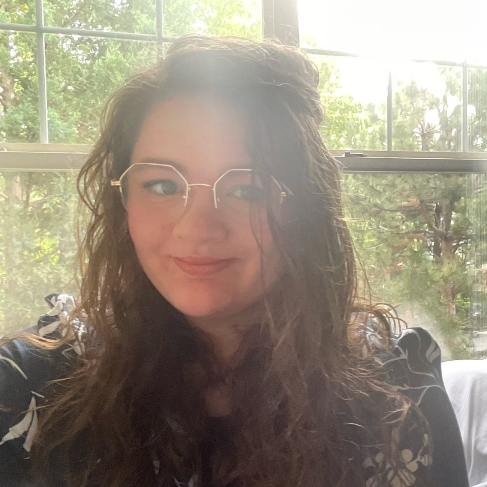

Education
- BSBA in Marketing
- University of Denver, 2020
- AGS focused in Multimedia Graphic Design
- Arapahoe Community College, 2017
Experience
- Marketing & Operations Coordinator
- Dynamic Service Group, November 2020 – August 2023
- • Collaborated in a cross-functional team to align our email, print advertisement, and digital marketing campaigns to our short- and long-term marketing plans; this team generated fourfold quarterly growth from Q4 2020 to Q2 2022.
- • Created, executed, and managed high-impact B2B and B2C quarterly newsletters for DSG’s home service companies, achieving consistently above-industry-average clickthrough rates by 1.42% on average.
- • Effectively managed day-to-day operations of multiple small home service businesses concurrently. Additionally, developed individual and joint marketing strategies to promote services, supporting overall business development.
- • Authored a published article in an industry magazine, which served as the cornerstone of the keynote presentation at a major client-industry conference.
- Owner, Graphic Designer
- TheBrand, February 2016 – November 2020
- • Managed nationwide client, contractor, and other stakeholder relationships, ensuring seamless collaboration and project execution through leveraging digital tools.
- • Designed for and presented upon various branding components for national clients, including notable names such as Silvia Moreno-Garcia.
- Design & Marketing Coordinator
- Center for Professional Development, August 2017 – August 2019
- • Engineered an innovative solution reducing organizational procurement costs on a low budget recurring project by $2400 annually.
- • Managed company’s visual branding by creating all visual content for social media and newsletters, and courses held by the program.
Skills
- Adobe Creative Cloud
- HTML & CSS
- Microsoft Office
- Salesforce
- Monday.com
- Smartsheet
- Asana
- Trello
- Basecamp
- Mailchimp
- Constant Contact
Community Involvement
- K-8th Grade Program Organizer
- Calvary Restoration, July 2018 – Present